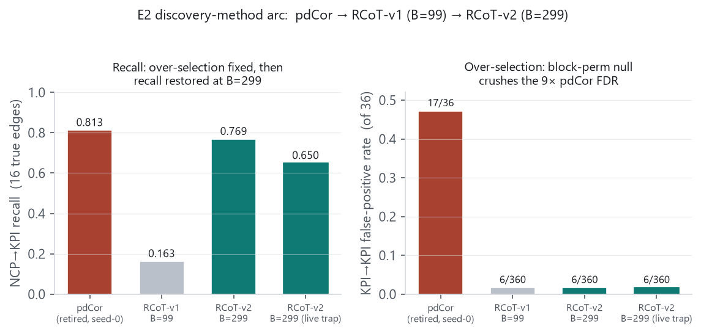
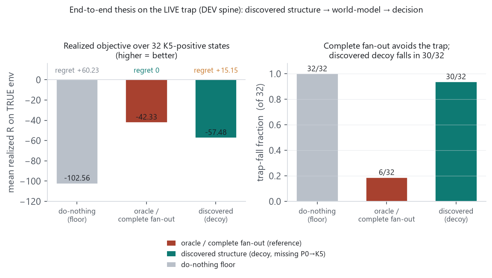
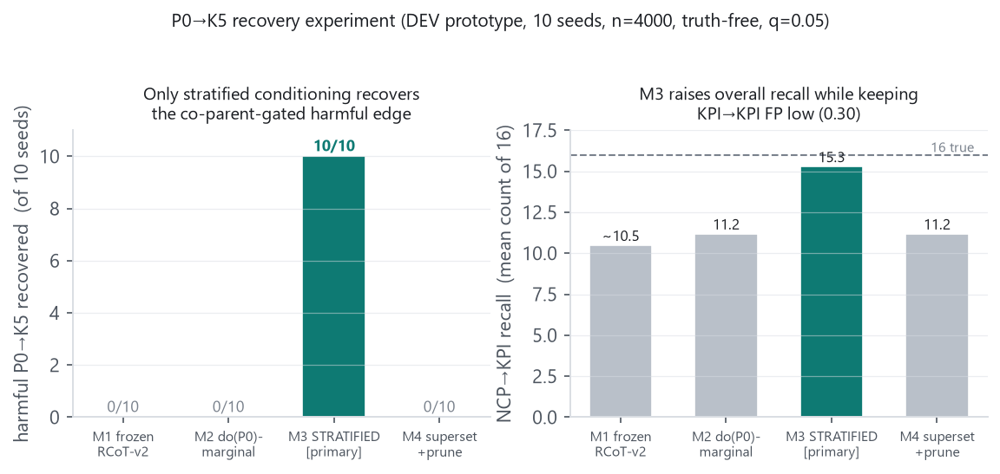

gap_norm = 0.190022 ≥ tau_E2 = 0.10,
mean-negative 0.000000, factor-removal 0.000000,
feasibility 32 + 32. tau_E2 was not tuned (truth-free prediction
≈0.204; observed 0.190).
This record consolidates the E2 discovery-method arc — pdCor → RCoT-v1 (B=99) →
RCoT-v2 (B=299) — the operating-point redesign that made the E2 decision trap live, the
RCoT-v2 recovery run on the redesigned environment, and two DEV prototypes. The frozen selector is
RCoT-v2 (block-conditional-permutation null, block_perm_reps=299, dz=25),
which on the old environment matches the retired pdCor baseline on true edges (F1
0.855 vs 0.867) at higher precision, without pdCor's
17/36 KPI→KPI over-selection, and ≈300× faster. The redesign that made the decision
trap live (gap 0.190) simultaneously made the harmful P0→K5 edge
strictly harder to discover: NCP recall fell 0.769→0.650 and
P0→K5 recovery fell 3/10→0/10 — both recorded as-run, neither
tuned. On the live trap the end-to-end spine fired: oracle/complete fan-out rejects the
locally-attractive, globally-harmful P0 move (regret 0) while the discovered
decoy structure (missing P0→K5 in 10/10 seeds) falls into it (regret +15.15),
and the two arms are byte-identical where the trap is inactive. A separate DEV prototype shows the
harmful edge is observationally recoverable by a stratified (co-parent-conditioning) test
(10/10), which the frozen marginal method never admits. The binding constraint to the E5 thesis on E2
is therefore discovery completeness of the harmful P0→K5 edge — not the world-model
and not the planner. All prototype-vs-frozen labels below are load-bearing.
reports/archive/2026-09-06/).
e2-pdcor-seed0-baseline (retired pdCor seed-0 numbers) ·
e2-improvement-synthesis (4-agent speed/quality analysis; its Step-0/1b noise-escalation
branch is superseded, §2.3) · cmi-pdcor-rcot-comparison (§7) ·
e2-rcot-recovery (RCoT-v1 B=99 as-run) · e2-rcot-lowrecall-diagnosis
· e2-rcot-v2-recovery (B=299 on the OLD env) ·
e2-operating-point-redesign-asrun (live-trap freeze) ·
e2-rcot-v2-recovery-REDESIGNED · e2-thesis-endtoend-livetrap ·
e2-p0k5-recovery-experiment (DEV) · e3-chain-recovery-derisk (DEV) ·
e2-latent-confounding-prereg-DRAFT (superseded typed-truth reframe, §8).
GATE_CONTRACT_E2.md, commit 8d70a4f,
xfail(strict=True)) stood untouched until the operating-point redesign (§3)
deliberately made the trap live. A conservative / partial recovery is a valid recorded boundary
result, not a defect to tune away.
| method / event | protocol_commit | key config | status |
|---|---|---|---|
| pdCor (U-centered partial distance corr) | 828e345 | B_perm=999, per-target BH-FDR q=0.05, n=4000 | RETIRED as LIVE method |
RCoT-v1 (E2_RCOT_DISCOVERY_PROTOCOL.md) | eba381a | null=block_perm, reps=99, dz=25 | FROZEN; first-freeze outcome |
RCoT-v2 (..._V2.md) | 8052e10 (733e838) | only change: reps 99→299 | FROZEN; shipped E2 selector |
| Operating-point redesign | 8ed31bf; env 9d87a60 | id_ranges[6]:(−60,65)→(1.5,4.0); KPI_MEAN_STD[5] re-derived | FROZEN (trap live) |
| E2 decision null | 8d70a4f | xfail(strict=True) (FAIL) | untouched by discovery work |
Modules: cdd_oran/e2slice/discovery_rcot.py (v1 numerics),
discovery_rcot_v2.py (thin sibling, only reps differ; v1 100% preserved + loadable),
evaluate_rcot.py / evaluate_rcot_v2.py (scorers, mirror evaluate.py).
Anti-p-hacking ordering enforced every run: Phase A — all masks persisted +
content-hashed + fail-closed re-loaded (re-deriving every protocol constant) BEFORE any truth read;
Phase B — recovery scored against E2V2Env().true_adj_matrix() into a separate
record. No seed was ever dropped or reweighted. All runs single-core
(OMP/MKL/OPENBLAS_NUM_THREADS=1).
E2 truth (pre-redesign): 16 NCP→KPI edges, 0 KPI→KPI edges — all 36 lagged
KPI→KPI candidates are true-negatives (KPIs are a pure function of the current params, no
autoregression; verified in dataset.py, params drawn mutually-independently every step so
Pm−1 ⊥ Pm).

The frozen pdCor run only ever completed seed-0: seeds 1–2 failed to launch
(rc=127, 0-byte outputs, rows generated but no discovery), seeds 3–9
never existed. Seed-0 discovery ran ≈31,138 s ≈ 8.65 h single-core (epoch
timestamps; the time wrapper was unavailable). Run git_sha f0768430,
dataset_hash f223764… Scored seed-0 recovery
(replicate-00/recovery.json, verbatim):
The failure is isolated to the Z-dependent lagged-KPI candidates; independent-parameter NCP candidates calibrate cleanly. Diagnosed cause: marginal-permutation miscalibration — permuting a candidate column that is a smooth function of a shared parent vector destroys its dependence on Z, so the null samples joint not conditional independence and is too tight, landing Z-dependent true-negatives in its upper tail. The pdCor denominator guard fired 0 times (the failure is invisible to it). Deeper limit: |pdCor| is a conditional-association score, not a CI certificate — pdCor=0 ⇏ X⊥Y|Z (Sékely–Rizzo 2014). pdCor kept on disk as a documented naive-DAG baseline.
Decision (user-greenlit 2026-09-06): retire permutation-pdCor as the LIVE method; move to a genuine CI test with an analytic / conditional-permutation null (RCoT). The pivotal reason was quality (the 9× over-selection is a method property, not a bug), not merely the ≈8.65 h/seed cost.
RCoT (randomized-Fourier-feature kernel CI test, RFF approx of KCIT, analytic weighted-χ2 or block-conditional-permutation null) with per-target BH-FDR. Frozen with null=block_perm, reps=99 (user approved block_perm over the analytic null). 10 seeds, ≈14.5 min total, guard fired 0/84 every seed. 10-seed envelope: NCP→KPI P 0.674 / R 0.163 / F1 0.251; KPI→KPI 6/360 FP (mean 0.60/36), rejection 0.983. So the block-conditional-permutation null crushed the KPI→KPI over-selection (0.983 vs pdCor's 0.528) — the calibration property RCoT was built to buy holds — but recall collapsed to 0.163 (two seeds selected nothing).
This is the pivotal method-iteration correction. The e2-improvement-synthesis brief had
flagged a Step-1b escalation branch: that E2's noiselessness (Y=f(Z)
exactly) might defeat any CI test and turn the fix into a benchmark-design (add-noise)
decision. That branch was falsified. Diagnosis (e2-rcot-lowrecall-diagnosis,
truth-free on the byte-faithful test-bed calib_study4_correct + validation that re-scoring
the frozen masks reproduced every persisted number):
Z_full,
Z_params_only, Z_none (marginal), Z_coparents all within
<0.03 — so “condition on everything ⇒ explain away the true parent” is
falsified.reps=99 the
minimum p-value is pinned at the floor 1/(99+1)=0.010, which cannot clear
the per-target BH leading threshold 0.05/14=0.00357. The
strong-but-quantized true-edge p is discarded at selection, not at the test.block_perm_reps ≥ 299 (floor
0.0033 < 0.00357): BH power 0.086→~0.74
while KPI→KPI FP stays ≈0.010. analytic_hbe also restores recall
(0.163→0.769) but its KPI→KPI FP grows with n (0.037→0.120 as n:1000→4000)
— reopening the over-selection — so it is reported only as a sensitivity variant,
not adopted.No benchmark-noise change is needed for E2 recall. The escalation to a noise decision was superseded by this diagnosis.
Only change from v1: block_perm_reps 99→299 (fresh pre-registration,
protocol_commit_v2 8052e10; v1 byte-preserved and still loadable). 10 seeds,
≈1.7 h (≈3× v1's cost), single-core, no seed dropped. 10-seed envelope on the
OLD (pre-redesign) env: NCP→KPI P 0.964 [0.86, 1.00] / R 0.769 [0.75, 0.81] / F1 0.855
[0.80, 0.90]; KPI→KPI 6/360 total FP, rejection 0.983.
| method | NCP R | NCP F1 | KPI→KPI FP | runtime |
|---|---|---|---|---|
| RCoT-v2 (B=299) | 0.769 | 0.855 | 6/360 | ~1.7 h / 10 seeds |
| RCoT-v1 (B=99) | 0.163 | 0.251 | 6/360 | ~14 min / 10 seeds |
| pdCor (retired, seed-0) | 0.813 | 0.867 | 17/36 | ~8.65 h / seed |
RCoT-v2 matches pdCor on true edges (F1 0.855 vs 0.867) at higher precision, without pdCor's 17/36 over-selection, and ≈300× faster. RCoT-v2 is a solid E2 discovery building block.
The recorded E2 decision null was FAIL (the shared-knob trap was dormant at the old operating point).
The pre-registered redesign (E2_OPERATING_POINT_REDESIGN.md, applied verbatim) shifted
only P6's range id_ranges[6]:(−60,65)→(1.5,4.0) and
re-derived the K5 standardization constant
KPI_MEAN_STD[5]:(−10.140367,12.583744)→(−0.956730,4.771898)
(deterministic n=1e6 re-derivation; tau_E2=0.10, the P0 grid, bank rules, and
degeneracy definitions untouched). K0–K4 verified bit-identical two ways (P6 is
K5-exclusive, drawn after P0–P5; the n=1e6 re-derivation returned KPI[0..4] unchanged).
| criterion | value | threshold | result |
|---|---|---|---|
| A. mean_positive(gap_norm) | 0.190022 | ≥ tau_E2 = 0.10 | PASS |
| B. mean_negative(gap_norm) | 0.000000 | ≤ 0.01 | PASS |
| C. factor-removal positive gap (drop xApp4/K5) | 0.000000 | ≤ 0.01 | PASS |
| D. feasibility | 32 pos + 32 neg | 32 + 32 | PASS |
Degeneracy guards (32 positive-bank states, true-K5 threshold −25 satisfy-below): reachable-satisfied 32/32; not-free-at-optimum 30/32; both-regimes-coexist 32/32; genuine-cost 30/32. The trap is a genuine trade-off, not a maximized number or an unsatisfiable trap. tau_E2 was not tuned (truth-free prediction was ≈0.204; observed 0.190). The RCoT-v1/v2 recovery runs of §2 are on the OLD env and are now stale run-outputs (re-run below), not test failures.
RCoT-v2 (protocol_commit_v2 8052e10, B=299, dz=25, no RCoT constant changed) re-run on the redesigned env (9d87a60), 10 seeds, n=4000:
Status: dev-only; nothing committed, no tracked source modified, runs/ untouched.
Runner scratchpad/e2_thesis_endtoend.py. The prototypes named in the task
(ms_world_model_dev.py, decision_harness/, trap_live/) did
not exist in tree or history; the spine was rebuilt directly on the FROZEN locked machinery
— cdd_oran/analysis/v2_regret.py (objective R = hinge cost
over the panel {xApp0,1,2,4},
P0_GRID=linspace(−100,100,101), 2-advance actuation lag) and
scripts/e2_decision_gate.py (the frozen 32 K5-positive + 32 K5-negative committed-state
bank). Full spine run over the 32 K5-positive states — discovered-structure → world-model
→ H=1 decision → REALIZED score on the TRUE env. Three arms differ only in the world
model used to select do(P0); realized R always scored on the TRUE env.

E2V2Env(decoy_omit_p0_k5=True)) reaches −57.48, regret
+15.15, and falls in 30/32; the do-nothing floor is
−102.56 (regret 60.23, trap-fall 32/32).
| arm | mean realized R | mean regret | trap-fall | true-K5 satisfied |
|---|---|---|---|---|
| do-nothing (floor) | −102.56 | 60.23 | 32/32 (1.00) | 0/32 (0.00) |
| oracle / complete fan-out | −42.33 | 0.00 | 6/32 (0.19) | 26/32 (0.81) |
| discovered structure (decoy) | −57.48 | 15.15 | 30/32 (0.94) | 2/32 (0.06) |
E2V2Env, complete fan-out incl. P0→K5) prevents
the harmful move: regret 0, true K5 ≤ −25 in 26/32.E2V2Env(decoy_omit_p0_k5=True)) systematically falls
into the trap: regret +15.15 (median +9.0, max +51.2), realized R strictly worse than oracle in 25/32.
The decoy is the faithful model of the real discovered masks: across all 10 discovery seeds
(runs/e2slice-redesign/replicate-00..09/discovery_rcot_v2.json), P0→{K0,K1,K2}
recovered 10/10, P0→K5 0/10, and K5's discovered parents are at most {P6}
or empty — never P0, never any KPI, so no direct or indirect P0→K5 path in any seed.
Spurious KPI→KPI FPs are inert under an env-mechanism world model
(k_t=f(p_{t−1}), no KPI→KPI channel), so the discovered arm is one
deterministic structure, not a 10-way average. Mechanism note: the discovered arm's live-trap
predicted/realized gap is modest (−61.6 vs −57.5) rather than a wild over-prediction —
the decoy freezes K5 at its already-violated committed value (~0), so it does not over-promise on K5;
it simply has no lever to fix it.
Verdict. The end-to-end thesis — never previously exercised — fired: complete/oracle fan-out rejects the locally-attractive/globally-harmful P0 move; the discovered structure (missing P0→K5 in 10/10) falls into the trap; the two arms are identical where the trap is inactive. The binding constraint to the E5 thesis on E2 is discovery completeness of the harmful P0→K5 edge — not the world-model and not the planner. Caveat: the world model is mechanism-restricted-to-structure (a deliberate structure ablation isolating the missing edge from mechanism-estimation noise); a data-fit world model would add fitting error but cannot change the qualitative result, since K5's discovered parents contain no P0 path in any seed (∂K5/∂P0 ≡ 0 either way).
Status: DEV / analysis prototype, ran 2026-09-07 night (agent af0008a1), filed
under 09-06. Nothing frozen / committed / pre-registered; truth read only at scoring. Live-trap E2
(9d87a60). Runner scratchpad/p0k5_full.py. The harmful edge is
co-parent-gated:
P0 buried additively with P7 inside a Gaussian bump of width P6, ~1% marginal variance, fully nonlinear. Because E2 params are mutually-independent exogenous roots, do(P0) == observational marginal (no confounding to break); the edge is recoverable only by conditioning on / controlling the co-parents.

| method | P0→K5 | P0→{K0,K1,K2} | NCP recall /16 | KPI→KPI FP | param FP |
|---|---|---|---|---|---|
| M1 frozen RCoT-v2 baseline | 0/10 | 30/30 | ~10–11 | 0.60 | — |
| M2 do(P0)-marginal (control) | 0/10 | 30/30 | 11.2 | 0.70 | 0.20 |
| M3 STRATIFIED [primary] | 10/10 | 30/30 | 15.3 | 0.30 | 0.30 |
| M4 superset+prune | 0/10 | 30/30 | 11.2 | 0.00 | 0.00 |
M3 = S* = max over stratifier g (g over ALL candidates, g≠i) of conditional η²(target | cand_i binned, pooled within g's strata), with a conditional-permutation null permuting cand_i within each g-stratum and re-maxing over g (a proper max-statistic CI test). Truth-free: g ranges over all candidates — the method discovers that stratifying by P6/P7 opens the gate, it is not told they are the co-parents. M3's P0→K5 cond-perm p = 0.0033 on all 10 seeds (the 1/300 floor — the observed statistic beats all 299 permutations every seed). Marginal η²(K5|P0)=0.001–0.005; marginal-perm p 0.08–0.98 (never significant); P0→K5 is not even in the loose (q=0.20) marginal superset (0/10).
Findings. (1) The harmful co-parent-gated edge IS recoverable from purely observational data — no interventional data required — the lever is the conditioning / stratification strategy, not intervention. (2) Both controls fail as diagnosed: interventional-marginal (M2) draws the same weak marginal; superset-then-prune (M4) can't admit an edge whose marginal signal is ~zero. (3) M3 is not flagging everything — it improves NCP recall (15.3 vs ~10) while keeping KPI→KPI FP low (0.30). (4) This closes the E2 loop in principle: observational stratified discovery → complete structure → (already-proven §5) world-model + decision reject the harmful action, with discovered not oracle structure.
Positions the project's discovery statistic on a clean axis for the journal extension: model-based CI (CMI) → model-free association (pdCor) → model-free CI (RCoT).
vmap, cdl.py).Refs: Sékely–Rizzo 2014 (Ann. Stat. 42(6)); Strobl–Zhang–Visweswaran 2019 / RCIT (arXiv:1702.03877); Wang et al., CDL, ICML 2022.
A pre-registration DRAFT (e2-latent-confounding-prereg-DRAFT, never frozen/committed)
proposed re-posing E2 truth as typed edges — directed P→KPI (manipulable) +
bidirected KPI↔KPI (shared-latent-parent / confounded siblings) — scored by two separate
metrics, plus a new contemporaneous-sibling construction and a two-regime (latent vs observed
shared parent) ablation.
This path was not taken, and the draft's own §2 explains why: the current E2 construction does not contain confounded siblings among the scored pairs. A scored KPI→KPI edge pairs a lagged candidate K_i=f(Pm−1) with a next-step target K_j=f(Pm), and Pm−1 ⊥ Pm, so they are genuinely independent true-negatives. The KPI→KPI false positives were therefore a marginal-permutation calibration artifact, not genuine confounding — so relabeling them as “true ↔ detections” would have been the goalpost-moving move the discipline forbids. The confounded-null calibration study that motivated the reframe had tested the wrong DGP; that Step-0 verdict was retracted. The actual fix shipped was the RCoT block_perm conditional test (§2.4), which controls the co-parent spurious dependence directly. The draft is retained (archived) as a documented superseded iteration.
Status: dev-only, ran 2026-09-07, no freeze / pre-registration — a calibration /
measurement study (the same move as plan 008 for RCoT), not an E3 discovery protocol. Scratchpad
e3_chain_derisk/. Included here because it is the sharpest unbuilt discovery risk toward
E5 (see the direction report): every prior result validated KPI→KPI as true-negatives to
reject; nothing had ever been validated to recover a KPI→KPI chain.
K1 is the intermediate KPI (descendant of K0, parent of {K2,K3}) = the 2-hop chain target. Method: |partial_corr(i,j|all other inputs)| FULL conditioning (E1-v2 as-is) vs a LOW-ORDER PC-stable min over |S|≤2; family-wise permutation-null threshold (never truth). 10 seeds, n=4000. Result: both methods recall 1.00 / precision 1.00 / F1 1.00 — 70/70 true edges (incl. both chain hops K0→K1 and K1→{K2,K3}), 0 FP, 0 collinearity STOPs. Chain edges score exactly 1.0 under FULL conditioning despite real collinearity (P0–K0=0.74, K0–K1=0.74, P0–K1=0.57), because each target is an exact linear function of its recorded parents so residualizing removes the mediator's shared variance from target and input identically (scale/collinearity-invariant). The plan-007 over-conditioning hazard is REFUTED with numbers, even though its collinearity precondition is genuinely present. Ancestry decoys (P0→K1 skip-K0, K0→K2 skip-K1, etc.): marginal 0.40–0.75 → FULL/LOW-ORDER 0.000, correctly separated by conditioning on the mediator.
Honest caveats. Noiselessness carries the crisp 1.0/0.0 separation; E5 turns noise ON. The low-order min-statistic already shows attenuation here (chain edges 0.46 vs direct-param 0.56–1.0 vs threshold ~0.045) — under noise that margin shrinks first, so prefer FULL conditioning for the chain and re-run this calibration at E5-level noise before trusting it. This validates stage-1 skeleton recovery only (the edge set); it does not exercise the downstream E5 spine (discovered structure → multi-intervention world-model → planner → reject) — that load-bearing blocker remains (see the direction report). Orientation is free (arch forbids within-step KPI→KPI; all fan-out lagged).
Provenance. RCoT-v2 protocol docs/benchmark/E2_RCOT_DISCOVERY_PROTOCOL_V2.md
(protocol_commit_v2 8052e10, locked module 733e838); operating-point redesign
docs/benchmark/E2_OPERATING_POINT_REDESIGN.md (pre-reg 8ed31bf, env-change
9d87a60); E2 decision null GATE_CONTRACT_E2.md 8d70a4f. Frozen
recovery outputs under runs/e2slice-redesign/replicate-00..09/discovery_rcot_v2.json. DEV
runners: scratchpad/e2_thesis_endtoend.py, scratchpad/p0k5_full.py,
scratchpad/e3_chain_derisk/ (nothing committed, runs/ untouched).
Figures. OMP_NUM_THREADS=1 MPLBACKEND=Agg .venv/Scripts/python.exe
reports/2026-09-06-e2-discovery-method-and-livetrap/make_figs.py — all numbers transcribed
from this consolidated record (the as-run provenance above); no figure invents a number. This report
lives under the gitignored reports/ tree. matplotlib 3.11.1 · numpy 2.4.2.